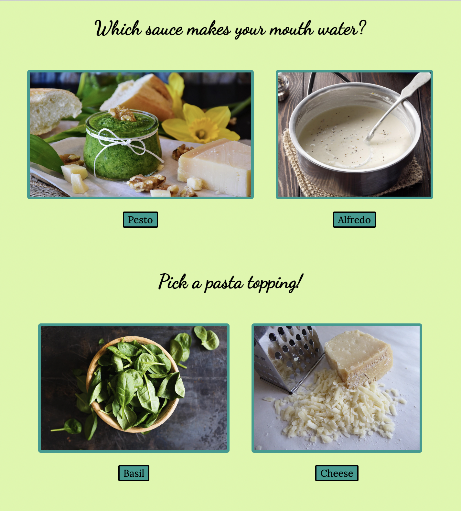

Dress Green
Informational website to educate people of all ages about limiting hyper-consumerism and fast fashion by supporting and purchasing from sustainable clothing brands.

Question App
An app that takes the user through a series of quiz questions with 5 different options.

Safe Zone
An app that aims to aid people with anxiety-related disorders while bringing awareness to mental health.

What Type of Pasta Are You?
A personality quiz that will tell the user what type of pasta they are based on their answer choices.
The Period Project
The Period Project is a website that strives to end taxation on female hygiene products and bring awareness to combatting period poverty and the Pink Tax.

Visit Shrija's github for more!